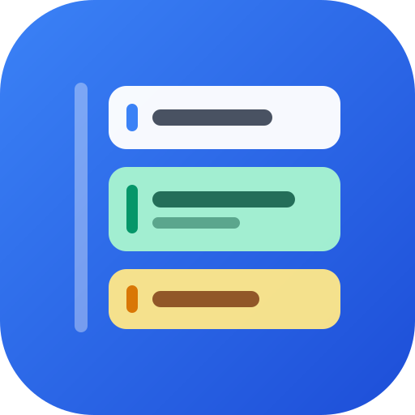

長按方塊即可拖曳到 24 小時表
📱 iPhone 提醒：若點擊沒跳出 Google 視窗，請確認「設定 → Safari → 阻擋彈出式視窗」為關閉，或先在 Safari 分頁中登入。
提示：在 Firebase Console 開啟「Google 登入」與「Firestore Database」（貼上 firestore.rules），再將 firebaseConfig 貼到上方（或寫入 js/sync-config.js）即可！
firestore.rules
firebaseConfig
js/sync-config.js
將整天規律排程存為模板，新的一天一鍵直接套入！
點擊任一時段卡片或下方按鈕，即可用標準活動方塊介面進行編輯：